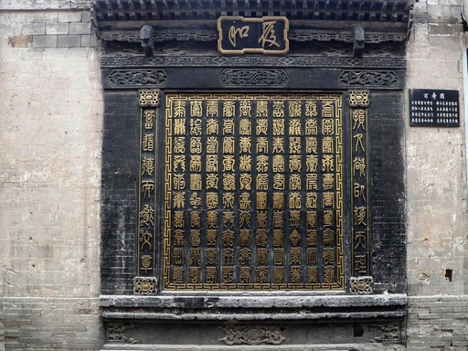

打卡任务
到此一游升级版01门前定位照先拍一张有“乔家大院”识别度的照片，适合发首图。
02主甬道背影用长线条拍入院感，人物走在画面三分之一处。
03红灯笼氛围找门洞或屋檐下的灯笼，拍侧脸、抬头或手部动作。
04砖雕木构细节拍匾额、门环、窗棂、照壁，让相册有文化层次。
05明楼院大景楼阁和院墙一起入画，适合做整组照片的封面。
06百寿图特写拍半身或手部细节，画面更安静，也更有中式味道。
怎么安排
约 2 到 3 小时1
入园后先拍外部识别照别急着冲进院里，入口照片最适合做朋友圈或小红书封面。
2
主甬道拍第一组人物照趁体力和妆发都在线，先拍全身、背影和行走抓拍。
3
进院后收集门框和照壁门洞框景很适合双人照，照壁适合正面半身照。
4
明楼院和百寿图做重点停留一个负责气势，一个负责细节，整组照片不会单调。
5
返程补拍空镜最后拍屋檐、灯笼、门环、墙角光影，做九宫格很顺手。
打卡画面
建议留 2 张空镜

注意事项
出发前确认
别把攻略当现场公告
开放时间、演艺、集章、夜游和票务活动会随季节调整。出发前建议看景区官方公众号或现场公告；室内展陈、文物区域按工作人员提示拍摄。